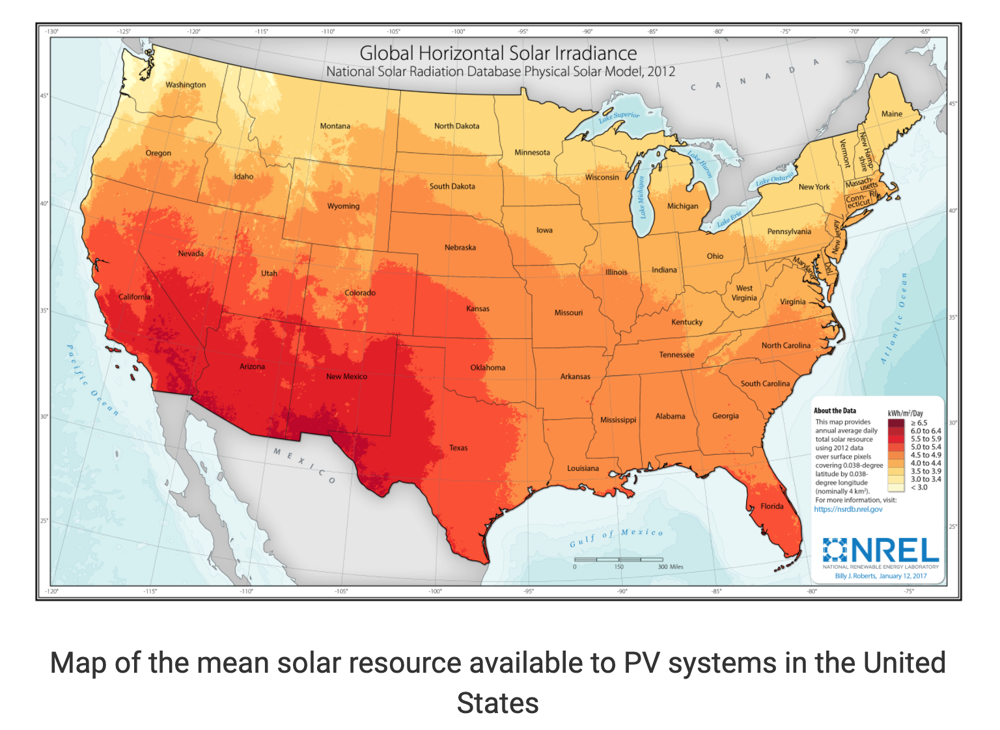

Welcome to SolCalc! This is a tool to help you make decisions on installing solar panels on your roof. (Scroll down to start data input and calculate how much value you get from installing solar panels)

^ What color is your residential location (select in the 1st drop down menu)? How many solar panels per person do you plan to install (select in the 2nd drop down menu)?
Black circle is the current state of your house without solar energy. For the colored circle, darker color means higher solar availability (capability of using solar as dominant energy source)
Size of black circle represents total household electricity usage. Colored circle is sized based on total solar energy harvested from solar panels installed. If the colored circle on the right is the same size as the black circle, your house can run 100% on solar!